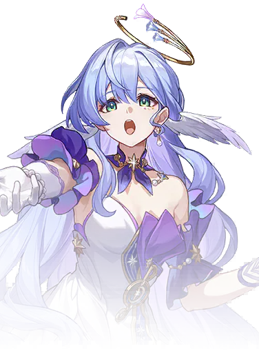

Descripcion del personaje
Robin es un personaje jugable en Honkai: Star Rail, conocido como una cantante de la cultura Haloviana. Nacida en Penacony, ha alcanzado la fama cósmica por su talento musical. Con un estilo elegante y demure, Robin ha sido invitada por "The Family" para actuar en el Charmony Festival, un evento que celebra su música y el poder de la Armonía.
Robin es un personaje jugable en Honkai: Star Rail, destacándose como una talentosa cantante de la cultura Haloviana. Su origen se encuentra en Penacony, donde ha alcanzado fama cósmica gracias a su excepcional habilidad musical. Robin es conocida por su estilo elegante y su presencia carismática, lo que la convierte en una figura notable en el universo del juego.
Introduccion al personaje
Invitada por "The Family", participa en el Charmony Festival, un evento que celebra la música y el poder de la Armonía. En combate, Robin se alinea con la Path of Harmony, lo que le permite potenciar a sus compañeros, aumentando su daño y rendimiento mediante su música. Su papel es fundamental como soporte, brindando beneficios a todo el equipo.
La combinación de su talento musical y su habilidad para fortalecer a sus aliados la convierte en un personaje querido por los jugadores, que pueden disfrutar de su historia y contribuciones tanto en el combate como en la narrativa del juego.
Este tipo de personajes suelen tener una influencia profunda en el trasfondo y la construcción del mundo del juego, a pesar de no estar directamente involucrados en la acción principal.

Calidad del personaje

VIA del personaje
Armonia

Estadisticas del personaje
- PV: 1281
- ATQ: 640
- DEF: 485
- VEL: 102
- Provocacion: 100